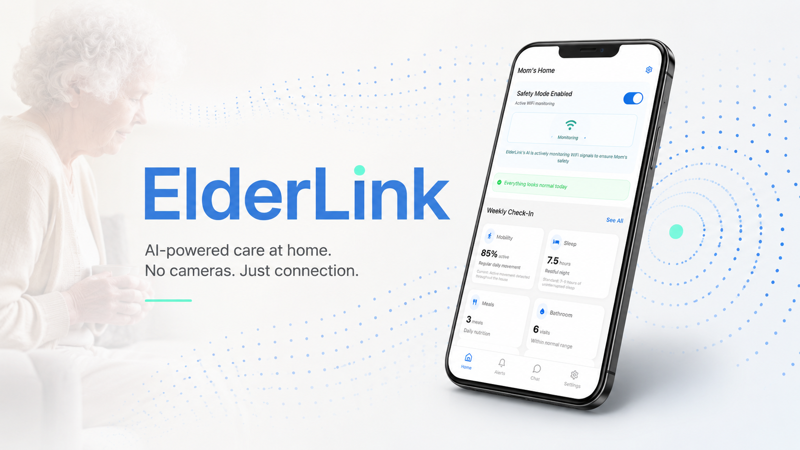
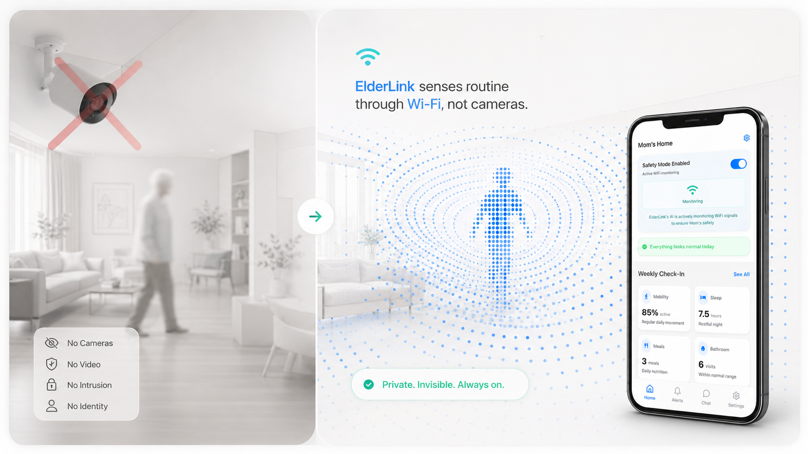
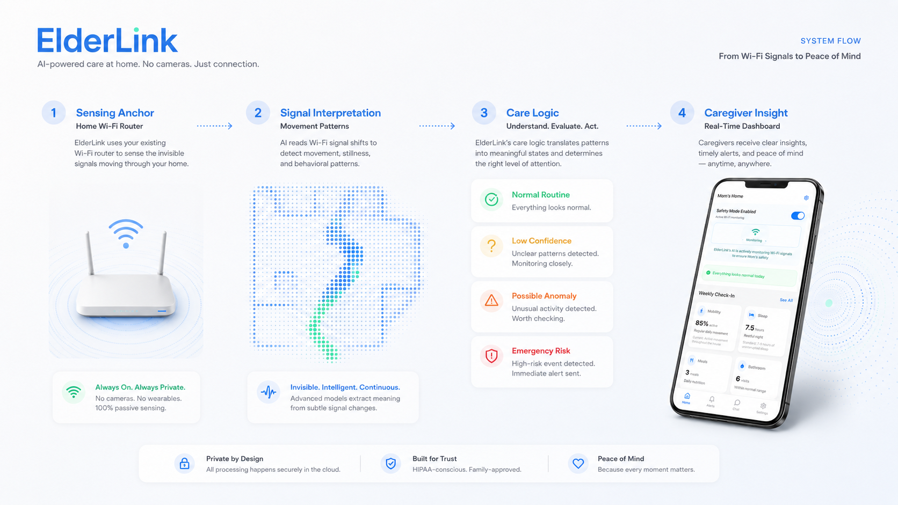
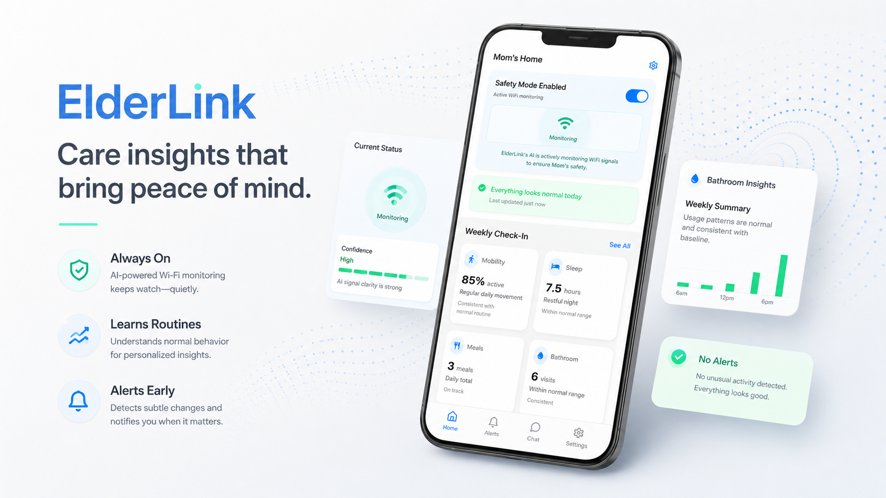
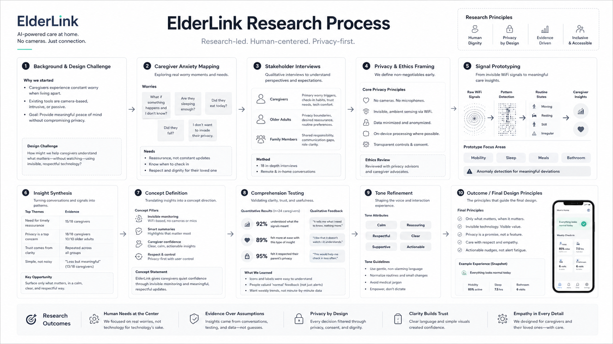
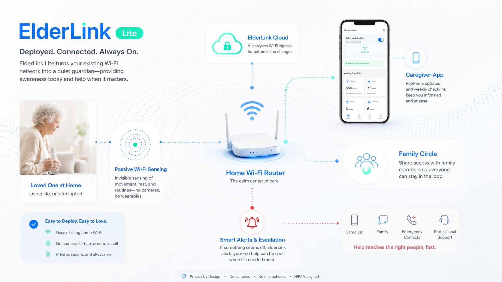

ElderLink
A privacy-preserving elder care concept that uses passive Wi‑Fi sensing to help caregivers understand whether an elderly family member is doing okay, without installing cameras at home.

Overview
ElderLink began from a simple tension: families want to know whether elderly loved ones are safe, but the most direct monitoring tools often feel invasive. Cameras can answer the question quickly, but they also turn domestic space into a watched space.
The project explores a different model of care: using changes in Wi‑Fi signal patterns as an ambient sensing layer. Instead of showing what someone is doing, ElderLink communicates whether daily routines appear normal, whether there is a possible anomaly, and whether a caregiver should gently check in.
Problem
Most elder care tools choose between privacy and peace of mind.
In long-distance care situations, uncertainty becomes emotional labor. A missed message, an unusual sleeping pattern, or a quiet morning can all trigger worry. Yet asking an older adult to use one more app, wear one more device, or accept a camera in the home can create the opposite feeling: being managed rather than cared for.
Design question
How might we help caregivers notice meaningful changes in an elderly person’s daily routine, while keeping the elderly person’s home private, camera-free, and low-effort?
The key design challenge was not to maximize data. It was to decide what information is enough. ElderLink treats care as a spectrum: most days should produce quiet reassurance, only uncertain days should invite a check-in, and emergency states should remain rare but legible.

System concept
A sensing pipeline designed for calm interpretation, not raw monitoring.
The service concept has four layers. First, the existing home Wi‑Fi router becomes the sensing anchor. Second, a sensing model interprets passive signal changes as everyday movement patterns. Third, a care logic layer translates confidence and anomaly states into understandable language. Finally, the caregiver receives a dashboard that prioritizes clarity over technical detail.
The interface intentionally avoids showing raw signal graphs as the primary view. For caregivers, the important question is not whether the signal fluctuated. It is whether today’s pattern resembles the person’s ordinary routine, whether something looks uncertain, and what action is appropriate.

Design principles
Interface direction
The dashboard tells caregivers what changed, how certain the system is, and what to do next.
I designed the caregiver side around three types of information: routine status, confidence level, and action guidance. This creates a hierarchy that is easier to understand than a conventional monitoring dashboard. The caregiver does not need to read the home as data; they need to understand whether the situation is normal, uncertain, or urgent.

Process
From care anxiety to readable service states.
The process moved from problem framing to interface prototyping. I mapped the emotional states of caregivers, identified where uncertainty appears in daily care, and translated those moments into dashboard states. The goal was to keep the system understandable even when the sensing result is probabilistic.
Testing focused on whether people could interpret the dashboard without needing technical background. The most important feedback was tone-related: words like “alert” and “abnormal” can create panic too early, while phrases like “low confidence” and “gentle check-in” leave space for human judgment.

Outcome
A care concept that is less about watching and more about knowing when to reach out.
ElderLink’s final direction is a lightweight caregiver dashboard paired with a passive home sensing layer. The concept does not try to replace family care, professional support, or emergency services. Instead, it helps bridge the quiet gap before a crisis: the everyday uncertainty of not knowing whether someone is okay.

Reflection
Designing for care means designing the emotional consequence of information.
This project taught me that privacy is not only a technical decision. It is also a relationship decision. A system can be accurate and still feel wrong if it makes the person being cared for feel exposed. ElderLink’s value comes from designing around what should not be collected as much as what should be shown.
The next step would be to connect the UI prototype to actual Wi‑Fi sensing outputs, then test how caregivers interpret different confidence states over time. I would also want to include elderly participants more directly in the evaluation, especially around consent, daily comfort, and the wording of caregiver notifications.
Built with
- Course context
- Perception-Aware Computing, Keio University Graduate School of Media Design
- Project focus
- Passive Wi‑Fi sensing for elderly care, caregiver dashboard, privacy-preserving service concept
- My contribution
- UI direction, care scenario framing, dashboard structure, visual communication, and prototype content